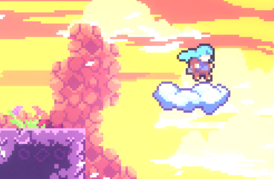
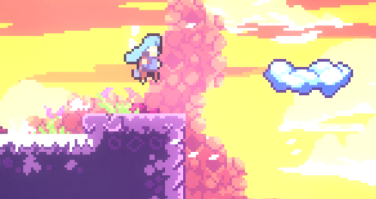
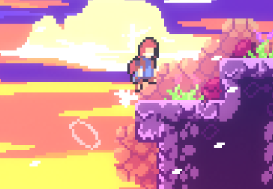

#a-00 #start #room-0
#IL_viable #fast
Times
optimal: 2.720
fast: 2.839 - 2.890
average: 2.907
Description
The standard strat for ILs for the first room. Fast and viable.
Fairly dense inputs but gets very consistent.
Execution
- Begin the room by performing an instant hyper, using a demo button can simplify the inputs
- Hold jump from the hyper and buffer a climbjump through a different jump bind
- Hold jump until you get enough height to land on the cloud
- Release jump and keep holding right towards the cloud
- Land on the cloud, then perform a reverse extended super towards the right. You can either:
- Jump then perform a left dash
- Slide on the cloud then perform a left dash
- Wait until you get enough height, then demo to the right at the same level as the higher platform
- Jump from the platform during the dash extension frames to perform a demohyper
- Shortly hold jump and right towards the cloud to get some distance
- Perform a downright dash towards the cloud
- Perform an extended (reverse) super, you can do it in three ways:
- Jump rightwards in the extension frames of the dash to perform an extended wavedash, then perform a left dash
- Jump leftwards in the extension frames of the dash to perform a reverse extended wavedash, then perform a right dash
- Jump right after the dash ends then perform a left dash
- Hold jump and right until hitting the wall, then perform climbjumps to scale it up.
- Once high enough, exit with either:
- an extended demohyper.

- a demohyper bunny hop.

- a short demohyper.

Notes
Releasing jump (execution step 4) has quite a large window. The picture below shows the latest frame on which releasing lands on the cloud.

Clouds give you the same liftboost (vertical exit speed) regardless of when you jump on them, as long as they are moving upwards. Jumping early or late on the clouds in this room does not make much of a difference.
Cues
Passing the background tiles can be used as a visual cue to release jump (execution step 4). The picture below shows the earliest frame on which releasing lands on the cloud.

Consistency
Do not buffer the (reverse) supers on the clouds. This has a chance to not give you the liftboost of the cloud and consequently only yield the regular super height.
Optimality
The first hyper can be optimized to give more speed by delaying the jump for 1-2 frames.
No delay (instant hyper) gives a 4 frames window to buffer the climbjump.
One frame of delay gives a 3 frames window to buffer the climbjump and saves 2 frames over no delay with an optimal jump release.
Two frames of delay give a 2 frames window to buffer the climbjump and saves 1 frame over no delay with an optimal jump release.
Go as far right as you can on the first cloud to maximize distance.
You can cornerboost on this corner to get a little more distance before the demohyper. Saves 0-1 frames.

Optimal run without the start hyper delay: